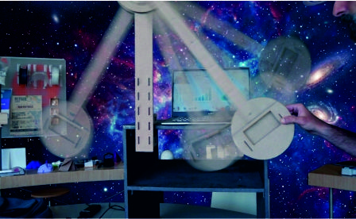

Il file admin.js non è stato caricato, contiene un errore o è di una versione precedente a questa pagina. Chiamate il docente.

Operazione: Riconoscimento Esoplanetario
Identificate il pianeta, il tipo di suolo e la ruota del rover.
Inserite il nome della squadra per iniziare.
Vi servono due telefoni: uno resta su questa pagina, l'altro fa da sensore con Phyphox.
Il disastro di Sbadatoni
«Benvenuti, analisti. Il rover è atterrato su un esopianeta, ma il dottor Cosmo Sbadatoni ha rovesciato il caffè sui server: la telemetria arrivata dal pianeta si è mescolata con i test fatti qui sulla Terra.»
Dovete ricostruire la missione rispondendo a tre domande:
Su quale pianeta è atterrato il rover? (lo rivela la gravità)
Su quale suolo si trova?
Quale ruota monta?
Le tre postazioni si possono affrontare in qualsiasi ordine. I dati si salvano da soli: potete passare a Phyphox e tornare qui senza perdere nulla.
Pannello di controllo
Scegliete una postazione. Potete tornare a correggere i dati fino alla trasmissione finale.
1 · La gravità perduta
«Il rover ha a bordo un pendolo identico al nostro. Quattro misure sono finite nella stessa tabella: tre le ho fatte io in laboratorio, una arriva dal pianeta. Ma quale?»
La frequenza dice quante oscillazioni complete fa il pendolo in un secondo.
Lunghezza (cm)
Frequenza (Hz)
Osservate la tabella.
Con il metro regolate il pendolo a quella lunghezza. La lunghezza si misura dal fulcro (la vite attorno a cui ruota il pendolo) al centro del grande disco portatelefono.
Misurate la frequenza con Phyphox. Ripetete la misura qualche volta e fate la media: una misura sola può ingannare.
Se la vostra media non coincide con la tabella, avete trovato la misura sbagliata: toccatela e confermate. Ogni conferma sbagliata costa punti.
📱 Phyphox → Pendolo
Fissate bene il telefono-sensore nel grande disco portatelefono e premete ▶.
Durante il conto alla rovescia spostate il pendolo di massimo ° e lasciatelo andare senza spingerlo.
Al termine leggete la frequenza (in Hz) e annotatela. Ripetete da capo qualche volta e fate la media.
⚠️ Lanciate il pendolo con un'oscillazione di massimo °. Con oscillazioni più ampie la frequenza cambia e la misura non è più confrontabile con la tabella.
Per scovare la misura non corretta conviene prima osservare la tabella: quando la lunghezza aumenta, la frequenza scende con un passo abbastanza regolare. Concentratevi sulla misura che esce un po' dall'andamento generale, poi testatela a mano: regolate il pendolo a quella lunghezza e confrontate la frequenza di Phyphox con quella in tabella. Attenzione a misurare bene la lunghezza: dalla vite del fulcro al centro del disco, non al bordo.
Perché un pendolo rivela la gravità?
Un pendolo oscilla perché la gravità lo richiama verso il basso. Dove la gravità è più forte il richiamo è più deciso e le oscillazioni sono più rapide; dove è più debole sono più lente. La massa appesa, invece, non conta. Per questo un pendolo è un ottimo misuratore di gravità da portare su un altro pianeta.
2 · Il suolo misterioso
«Il rover usa il sismopercutore Mjölnir-X per spingere un campione a esattamente cm. Sappiamo solo che il suolo d'atterraggio è quello ad attrito intermedio fra i tre campioni.»
📐 Come si misura
Posizione zero. Con il martello fermo a riposo, appoggiate il blocchetto in modo che il suo bordo sfiori appena la testa del martello. Le distanze si misurano da qui.
Angolo. Usate i gradi segnati sulla scala di legno del pendolo: l'angolo corretto è quello su cui si allinea la linea a matita del martello.
Lancio. Alzate il martello all'angolo scelto e lasciatelo andare senza spingerlo.
Ripetete. Lo stesso lancio non dà sempre la stessa distanza: fate almeno 3 lanci e la media, rimettendo ogni volta il blocchetto alla posizione zero.
Fase A · Individua il suolo
Mettete un blocchetto alla posizione zero e sganciate il martello sempre dallo stesso angolo (quello che preferite: per aiutarvi potete inserire la clip di metallo); ripetete con gli altri due e confrontate le distanze medie. Chi scivola di più ha meno attrito, chi scivola di meno ne ha di più. A voi interessa il blocchetto che ha l'attrito intermedio tra i tre: toccatelo.
Fase B · Trova l'angolo di sgancio
Usando solo il blocchetto ad attrito intermedio, trovate l'angolo da cui sganciare il martello perché il blocchetto si fermi a cm dalla posizione zero. Quando l'avete trovato, ripetete almeno 3 volte e controllate che la media sia davvero cm.
Sulla scala dei gradi del pendolo ogni tacchetta piccola vale °: contate le tacchette dallo zero. Partite da un angolo piccolo e guardate dove si ferma il blocchetto. Se resta corto alzate il martello di una tacchetta, se va lungo abbassatelo: la distanza cresce più in fretta dell'angolo, quindi bastano piccole correzioni. Ricordate: posizione zero ogni volta, e almeno 3 lanci per ogni angolo.
Perché una prova fatta sulla Terra vale anche lassù?
Dove la gravità è più forte il martello colpisce con più energia, ma anche l'attrito che frena il blocchetto è più forte, nella stessa proporzione. I due effetti si compensano: a parità di suolo e di angolo, il blocchetto percorre la stessa distanza su qualsiasi pianeta.
3 · L'enigma della ruota
Fase A · Individua la ruota
Scoprite quale delle tre ruote è quella montata sul rover. Fate fare a ciascuna giri completi sul pavimento, lungo il metro e senza farla strisciare, e leggete la distanza percorsa. Ripetete qualche volta e fate la media, poi toccate la ruota giusta. Se la vostra misura differisce di pochi centimetri dalla telemetria, va bene lo stesso: sono normali errori sperimentali.
A ogni giro, una ruota che rotola senza strisciare avanza di una circonferenza. La distanza percorsa è quindi s = N · 2π · R, dove N è il numero di giri e R il raggio. Potete misurare il raggio delle tre ruote e fare i conti, oppure confrontare direttamente la distanza percorsa in giri con quella della telemetria: la ruota giusta è quella che ci si avvicina di più.
Fase B · Il sensore della ruota
Il rover conta i giri con un sensore dentro la ruota, uguale all'accelerometro del vostro telefono: è guardando il grafico «Accelerazione x» che capisce quanti giri ha fatto. Proviamo a vedere come funziona questo sensore. Non dovete contare i giri: basta osservare la forma del grafico.
📱 Phyphox → Accelerazione (g inclusa)
Premete ▶, infilate il telefono-sensore nel cilindro e bloccatelo bene.
Al segnale di inizio lanciate il cilindro sul pavimento, a fianco del metro, con una spinta dolce e senza farlo strisciare. Non importa quanti giri farà: l'importante è osservare come si comporta il grafico.
Al termine recuperate il telefono e guardate il grafico nel riquadro Accelerazione x. Se non è chiaro, ripetete il lancio.
Perché «senza strisciare» è così importante?
Il legame fra giri e distanza vale solo se la ruota fa presa sul terreno, ed è l'attrito a garantirlo. Sulla sabbia le ruote dei rover veri slittano: contano giri ma avanzano meno, e il rover crede di essere dove non è. Per questo i rover marziani controllano la posizione anche con le telecamere.
Rapporto di missione
Ecco che cosa avete ricostruito. Controllate prima di trasmettere.
Prima di trasmettere: quanto vi è piaciuto il laboratorio?